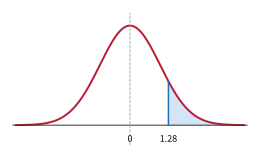
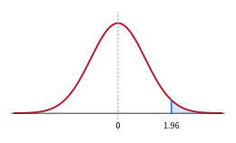
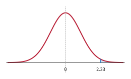

別冊練習問題 7 の解答 正規分布で上位の得点ライン
(1) ある試験の得点 \(X\) は、平均 \(70\)、標準偏差 \(8\) の正規分布に従う。上位 \(10\%\) に入るには何点以上必要か。（\(P(Z\geqq1.28)=0.1003\) を用いてよい）
標準化
\(Z=\dfrac{X-70}{8}\) は標準正規分布 \(N(0,1)\) に従う。
正規分布表
\(P(Z\geqq 1.28)=0.1003\)。つまり上位 \(10\%\) に入る境界は \(Z=1.28\)。

元に戻す
\[X=70+1.28\times8=80.2\]
【答案】
\[80.2\text{点以上}\]答
(2) ある試験の得点 \(X\) は、平均 \(50\)、標準偏差 \(12\) の正規分布に従う。上位 \(2.5\%\) に入るには何点以上必要か。（\(P(Z\geqq1.96)=0.0250\) を用いてよい）
標準化
\(Z=\dfrac{X-50}{12}\) は標準正規分布 \(N(0,1)\) に従う。
正規分布表
\(P(Z\geqq 1.96)=0.0250\)。つまり上位 \(2.5\%\) に入る境界は \(Z=1.96\)。

元に戻す
\[X=50+1.96\times12=73.5\]
【答案】
\[73.5\text{点以上}\]答
(3) ある試験の得点 \(X\) は、平均 \(65\)、標準偏差 \(9\) の正規分布に従う。上位 \(1\%\) に入るには何点以上必要か。（\(P(Z\geqq2.33)=0.0099\) を用いてよい）
標準化
\(Z=\dfrac{X-65}{9}\) は標準正規分布 \(N(0,1)\) に従う。
正規分布表
\(P(Z\geqq 2.33)=0.0099\)。つまり上位 \(1\%\) に入る境界は \(Z=2.33\)。

元に戻す
\[X=65+2.33\times9=86.0\]
【答案】
\[86.0\text{点以上}\]答